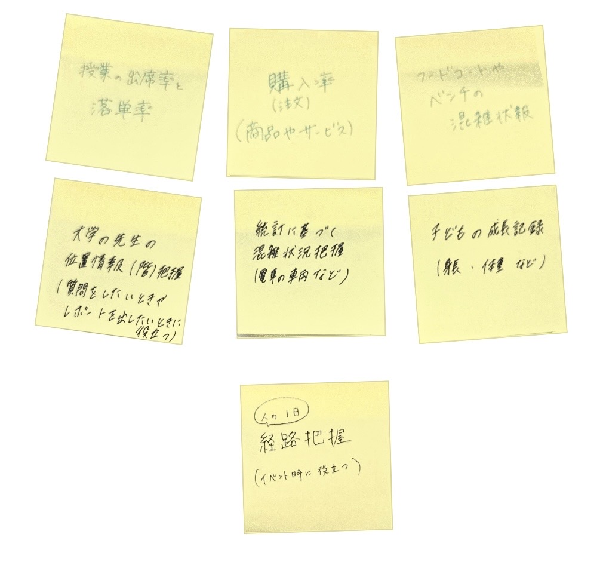

第3回課題
IoT(データ保存)で何ができそうか？どのようなデータを保存していくと価値あるものになるか？
グループワークした内容（ポストイット画像）

- 大学の先生の位置情報（何階にいるか）を把握できるデータ
→質問をしたいときやレポートを提出したいときに役立つ
- 授業の出席率と落単率が分かるデータ
→単位取得の難易度が分かる
- 統計に基づく混雑状況把握
→電車の車両などですいているところはどこか分かり混雑を避けることができる
- 子どもの成長記録
→身長や体重をデータに保存することで成長の過程を記録できる